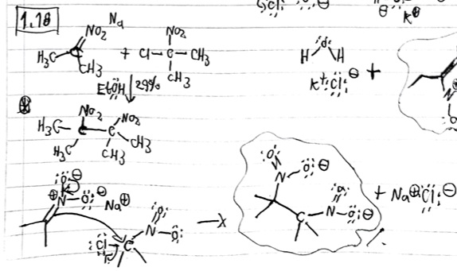
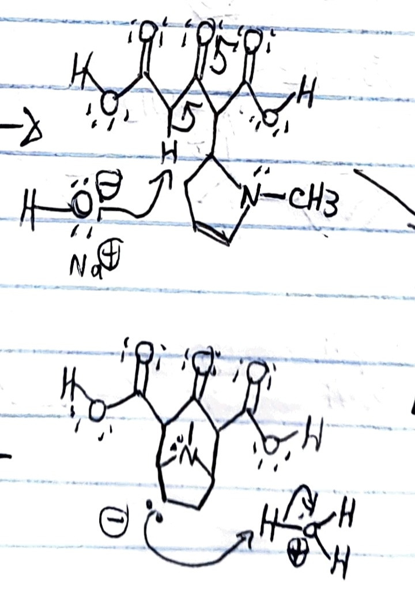
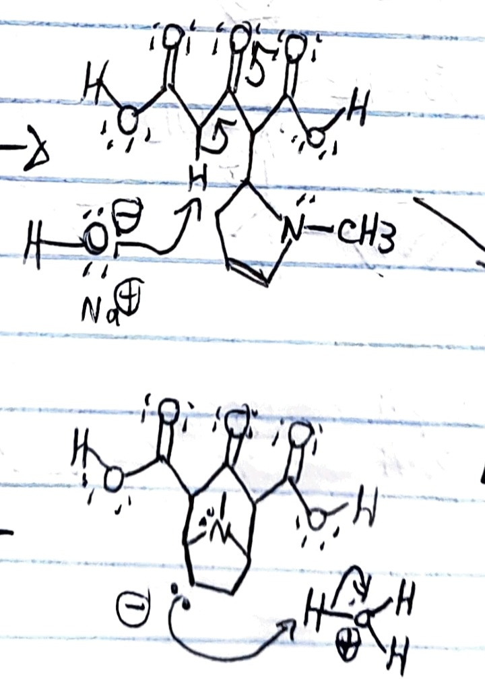

Overview
Purpose
We reach out to our visitors, in order to provide all the background and fundamental principles that they need in order to understand the basics of organic chemistry.
Audience
We invite those who are afraid to fail in their exams to take a look to this page and trustworthy and essential organic chemistry skills. Our mechanisms are based on the electrical properties of each atom in the molecule.
Reaction Mechanisms
Functional Groups
Why to visit this page?
Branding
Website Logo

Style Guide
https://coolors.co/0b3c49-731963-fffdfd-cbd2d0| Primary | Secondary | Accent 1 | Accent 2 |
|---|---|---|---|
| [#0B3C49] | [#731963] | [#FFFDFD] | [#CBD2D0] |
Typography
Heading Font: Poppins
Paragraph Font: Manrope
Normal paragraph example
This page is totally consacrated to alkyl halides, alcohols, aromatic rings, and carboxylic acids reactions. We talk about the properties of every functional group and we set forth the expected mechanism for a certain reaction.
Colored paragraph example
If your teacher is very demanding with his subject, we can teach you about organometallic reagents, heterocyclic rings, and inorganic oxidizers. We can talk about the effects of each reactive and their mechanism.
Navigation
Site Map
Content
Home Page
The Home Page is the place where the user starts to have interest in the web page. Is the place where he or she discovers the amplitude of the material that we have to offer, and decides to dive into our child pages.
Images for the Home Page


Reaction Mechanisms
The Reaction Mechanisms child page will contain general examples for the transformation of alcohols to carboxylic acids, amines to amides, carboxylic acids to esters, etc.
Images for Reaction Mechanisms

Functional Groups
The Functional Groups child page will contain fundamental information about the function and characteristics of chemical groups such as -amino, -hydroxy, -alcoxy, -thiol, etc.
Images for Functional Groups
 

Wireframes
Create three wireframes for your site. One for each page and list them here
Home
The Home Page contains the links for the Reaction Mechanisms child page, and the Functional Groups child page.

Reaction Mechanisms
In this child page, we will include a list of frequent asked questions, with its proper answer.
Functional Groups
In this child page, we will include the properties of the functional groups, just as coordination number and pka/pkb.